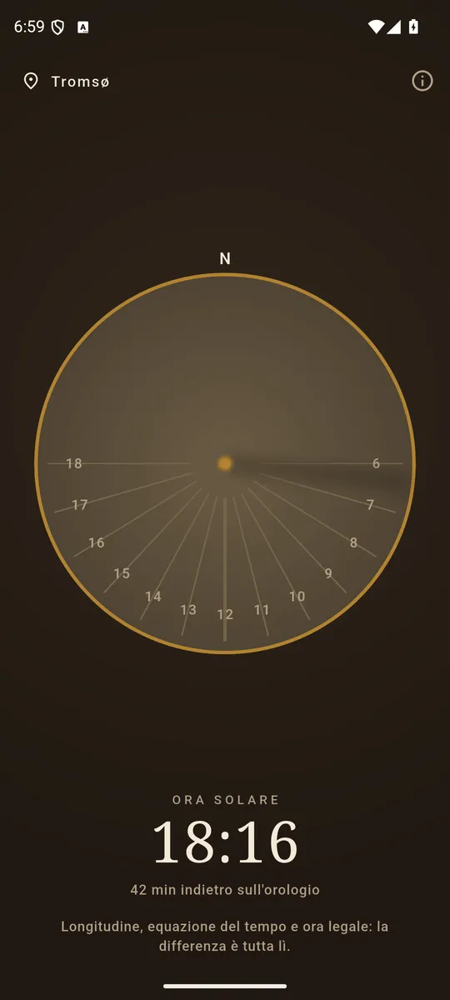
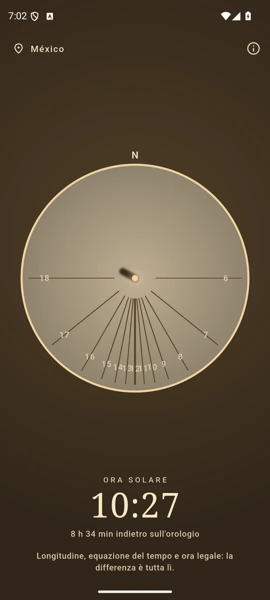
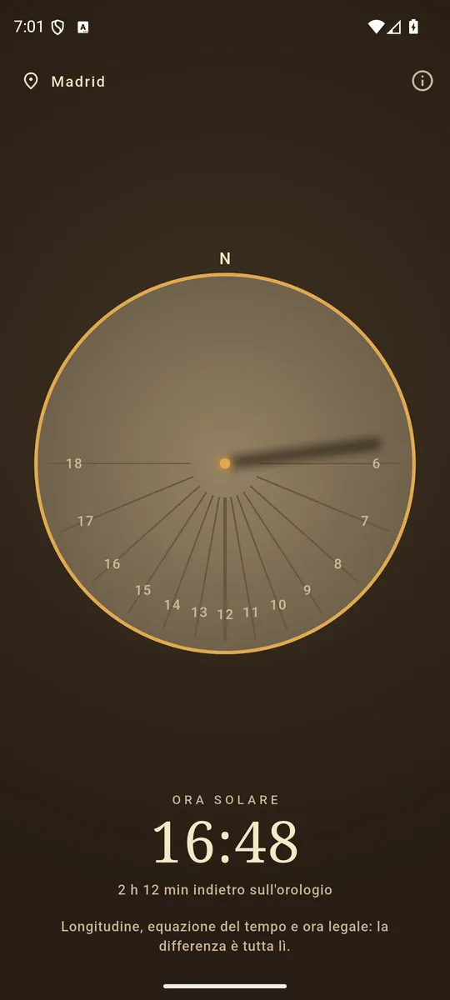

ItalianoEnglish
Una meridiana sul telefono: il quadrante del tuo posto, l'ombra dove cade adesso, e l'ora che tiene il Sole.

Le linee delle ore dipendono dalla latitudine: il quadrante è il tuo. 
Lunga e sfumata all’alba, corta e netta a mezzogiorno. 
Longitudine, equazione del tempo, ora legale: perché non torna.
Il quadrante è il tuo
Le linee delle ore di una meridiana orizzontale non sono equidistanti, e quanto sono sbilenche dipende dalla latitudine: all'equatore collassano tutte sul mezzogiorno — lì una meridiana orizzontale non funziona affatto — e salendo verso il polo si allargano fino a quindici gradi per ora. L'app ridisegna il piatto per il luogo dove sei, ed è la cosa che vale la pena vedere invece che leggere.
L'ombra cade dalla parte opposta al Sole, lunga come la cotangente della sua altezza: lunghissima e sfumata all'alba, corta e netta a mezzogiorno. Di notte non c'è, e l'app lo dice invece di disegnarne una finta.
Perché non è d'accordo con il telefono
Tre motivi, e sono tutti veri:
- La longitudine. Un fuso orario è largo un'ora: se non sei sul suo meridiano centrale il Sole è avanti o indietro fino a mezz'ora.
- L'equazione del tempo. Il Sole non è un orologio uniforme: corre avanti e indietro fino a un quarto d'ora nel corso dell'anno.
- L'ora legale. Un'ora secca, d'estate.
L'app mostra la differenza invece di nasconderla, perché è la prima cosa che chiunque chiede a una meridiana — e perché una meridiana che concordasse sempre con l'orologio sarebbe un orologio disegnato male.
I tuoi dati restano tuoi
Sundial chiede la posizione approssimativa e nient'altro: un chilometro di longitudine sono quattro secondi di ora solare. Niente posizione in background, niente account, nessun server: la posizione non esce dal telefono. Tutto è calcolato a bordo, e la rete serve solo agli annunci. Se preferisci non darla, c'è una lista di città inclusa nell'app.
Come si paga
Con un banner ancorato in fondo, e basta: nessun abbonamento, nessuna funzione tenuta in ostaggio.
Dove trovarla
Non è ancora su Google Play. Quando ci sarà, il collegamento comparirà qui.